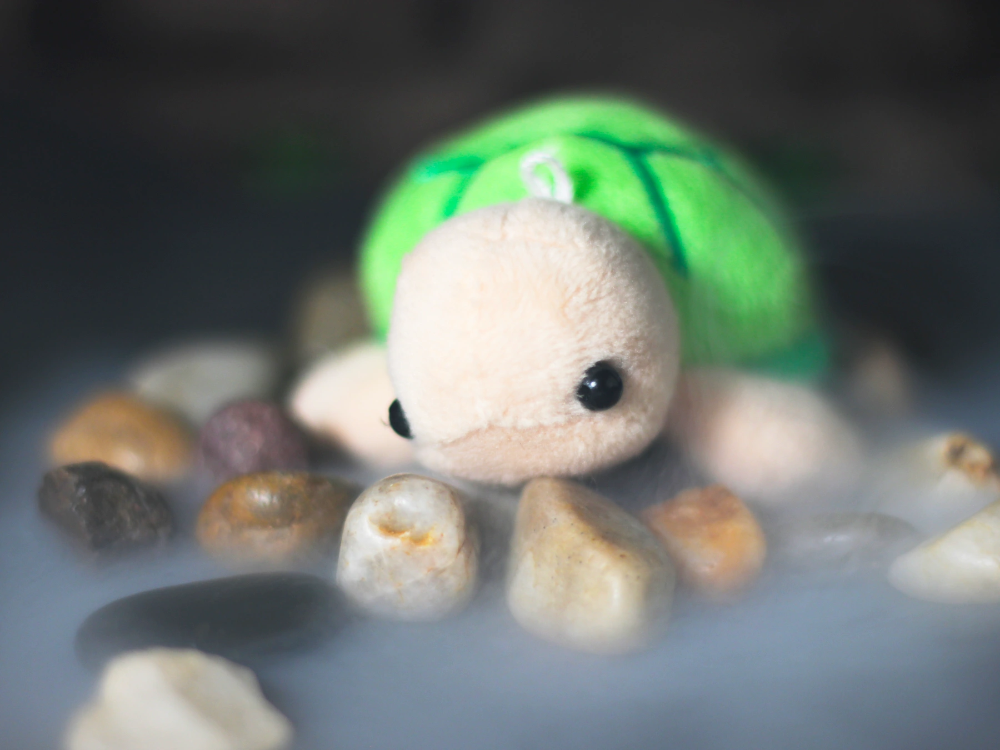

「やーい。お前なんでタコのくせして「そら」って名前なんだよ」
「タコだったら普通うみとかだろ」
とても天気の良いある日のお昼頃。
そらはいつものように仲間たちに名前のことをからかわれていました。
そらは目に少し涙を浮かべて、「うるさい！うるさい！」と怒りながら走ってみんなのところから離れていってしまいました。
周りに誰もいないところまでくると、そらは1人考え事をしました。
「なんでぼくはそらって名前なのかなぁ。」

そらはなぜ自分がそらという名前なのか、ちゃんとは知りませんでした。
そらに名前をつけてくれた人はママがお世話になった人なんだそうですが、そらは会ったことがありません。
なので、なぜそらという名前をつけたのかを聞いたこともありませんでした。
「ぼく。こんな名前いやだな。こんな名前をつけたやつが憎くてしかたがない。」

そう言葉にしだすと、次第にそらの気持ちは強く激しくなっていきました。
「ぼくがこんな苦労をしてるのだって知らないんだろうし、どんどん腹が立ってくる」
気持ちが抑えられなくなったそらはとうとうこう叫びました。
「ぼくにこんなふざけた名前をつけたやつなんて呪われちゃえ！ばちが当たったらいいんだ！」
そらがそう叫んだとたん、太陽を雲が覆って辺りが薄暗くなってきました。

すると、たちまち雨がたくさん降ってきて、そらは大慌てで家まで帰りました。
「ただいま」
そらは家に着くといつものように「ただいま」と言いました。でも、家の中はいつもとは違いました。
いつもならママが「おかえり」と言ってくれるのに、今日は誰も「おかえり」と言ってくれないのです。
「ママ？ママ？」そらは大きな声で言いました。
それでも、聞こえてくるのは雨の音だけでした。
そらは家中を探しました。

なのにどこを探しても、ママがいません。
そらは怖くなって家を飛び出して、「ママ！ママ！」と大きな声で呼びました。
それでもママの声は聞こえませんでした。
そらはもう一度「ママ！ママ！」と大きな声で呼びました。
そのとき、近くの草陰からガサガサと音がしました。
そらが音のした方を向くと大きなうさぎがいたのです。


「どうしたの？」うさぎはそらに聞きました。
「ママがいないんだ」そらは泣きながら答えました。
「それは大変だ！」うさぎは驚きました。それからうさぎは少し考え事をしてから「きみのママってどんな感じ？」とそらに聞きました。
「ぼくみたいに黄色いたこ。ぼくより少し大きい」そらは涙声で答えました。
それを聞いたうさぎは申し訳なさそうに体を縮こませました。そして、それからこう言ったのです。
_result.webp)
「ごめん。ぼくがさっき食べちゃった」

そらの涙はぴたりととまって、一瞬時間が止まったように静かになりました。
「なんで、そんなことしたんだよ！」そらはどなりました。うさぎは申し訳なさそうに頭を下げています。
「ママを返せよ」そらはうさぎに飛びかかって怒りました。

うさぎはただただ申し訳なさそうにしているばかりです。
しばらくの間そらは泣き叫んでいました。

そらの泣き声が少し落ち着いてきた頃、少し離れたところからカラスの歌声が聞こえてきました。

「
うさぎの怪物
怖いやつ
可愛い見た目で
可哀想
やつが食べたら戻らない
知らない世界へさようなら
戻す方法ただ一つ
小川の先の小さな洞穴
その洞穴に隠れてる
それを見つけりゃわかるかも
」
そらの涙はもうとまっていました。
ママを助けるにはこれしかない。
さっきまで勢いよく降っていた雨も、その時にはもうやんでいました。
小川の先の洞穴。
そらには心当たりがありました。
そらは洞穴のある小川まで急ぎました。
そらが道を歩いていると後ろからガサガサっと音がしました。
そらが振り返るとうさぎがこちらをみていました。
「ついてくるなよ。お前なんて」そらは怒ってそう言いましたが、うさぎはついてきました。
そらは何度かうさぎのことを睨みましたが、それでもうさぎがついてくるので諦めてうさぎのことは忘れて洞穴まで向かいました。
洞穴が見えるところまで来て、そらは驚きました。
先ほどの雨で小川の水が増えて、すごい勢いでながれる大きな川になっていたのです。

「こんな大きな川ぼくじゃ渡れない・・・。」
洞穴は見えているのに、洞穴まで行けない。
そらはとても悲しくなりました。どうしたらいいのか考えましたが、何も思いつきませんでした。
そらがしばらくの間その場をぐるぐる歩き回っていたとき、急に後ろにいたうさぎがそらのことを咥えました。

「なんだよ！ぼくのことも食べる気か！離せよ！」そらは抵抗しました。
うさぎはそらが暴れているのは気にせず、そらを咥えたままぴょんと大きくジャンプして川を飛び越えました。
対岸までつくとうさぎはそらのことをはなしました。
そらはしばらくの間驚いていましたが、ハッと気がつくと急いで洞穴の中に入っていきました。

その洞穴はたいした大きさではないので、すぐに行き止まりまで辿り着きました。
でも、そこには何もいません。
そらは慌てて周りを探しました。
どこかに何かいないかとキョロキョロ探しました。
そらが上の方を見ると洞穴の天井にヤモリが1匹くっついていたのです。

「そのうさぎのことで来たのかい？」
ヤモリは急に聞いてきました。

そらが振り返ると後ろには確かにうさぎがいました。
そらはヤモリの方に向き直ってうなずきました。
「この洞穴を出て、川を下っていくとそこに洞窟がある。その中にある瓶を取ってくるんだ」
「そうすればママにまた会えるの？」
「あぁ」ヤモリはうなずきました。
「ただ、その洞窟には乱暴なロブスターが住んでいる。そう簡単には瓶を渡してはくれないだろうけどな」。
今のそらにはどんな状況でも関係ありません。
ママに会うためにはそれしか方法がないのですから。
そらはさっそく洞窟を出て、小川沿いを下っていきました。
あいかわらずうさぎは後ろをついてきますが、それはもうどうでもいいことです。
はやくママに会いたい。
その気持ちでそらはどんどん歩いていきました。
にもかかわらず、ヤモリの言っていた洞窟は一向に見えてきませんでした。
もうたくさん歩いたはずなのに。
そらももうへとへとです。
すると今度はうさぎが前に出てきて、そらの前で背を向けてしゃがみました。

「乗れってこと？」
そらがそう聞くとうさぎはこくりとうなずきました。
そらは少し迷ってから、うさぎの背中に飛び乗りました。
そらが乗るやいなや、うさぎはすごい勢いで走り出しました。

ビュンビュンビュンビュン走っていき、気持ちの良い風がそらの頬をなぜました。
うさぎが走り出すとすぐに洞窟が見えてきました。
「やった！あれだ！」そらは嬉しくなって声を上げました。
洞窟の前で、うさぎはそらのことをおろしました。
そらはすぐに洞窟の方へ走り出しました。
でも、すぐに立ち止まって「ありがとう」とだけいうとまた急いで洞窟の中へ入っていきました。

洞窟をだいぶ進んでいった先で、なんだか低い唸りのような音が聞こえきました。
そらはその音を聞いて立ち止まり、奥の様子をそっと確認しました。

すると、その先にはロブスターが眠っていました。 そらのことは簡単に丸呑みできてしまうようなロブスターが。 先ほどの音はこのロブスターのいびきだったのです。
そらがロブスターのことを見ていると、ロブスターのさらに奥にきらりと光るものが見えました。 ヤモリの言っていた瓶です。 でも、その瓶を取るにはこのロブスターをどうにか乗り越える必要がありました。
「ぼくがオトリになるよ」うさぎが後ろから小さな声で言いました。

「でも、危ないよ？」
「大丈夫。ぼく足はやいから。」
そらは迷っていましたが、うさぎはさっそく行動をはじめました。
「そこに隠れてて」そう言ってそらのことを岩陰に隠すと、うさぎは石を後ろ足で蹴飛ばしてロブスターに命中させました。
ロブスターは起きるなり「なにしやがんだ！」と大きな声でどなり、うさぎの方へと近づきました。
うさぎは一目散に洞窟の出口へと逃げていき、ロブスターもうさぎのことを追いかけていきました。

ロブスターがいなくなった隙に、そらは急いで瓶をとりにいきました。

そらが瓶を手に取ると、瓶の中には透明で黄色い液体が入っていました。
そらは瓶を持って、急いで洞窟の外へと向かいました。
洞窟の出口から慎重に外を見渡すと、川の対岸にうさぎが立っていました。

周りを見てもロブスターの姿は見当たりません。
「あれ？ロブスターは？」そらはうさぎに聞きました。
「流れていっちゃった」うさぎはそう答えました。
ロブスターはすごい怒っていたので、小川の水が増えてるのに気がつかなかったのです。
うさぎは対岸からこちらに向かってジャンプしてくると、またそらの前で背を向けてしゃがみました。

そらはぴょんとうさぎの背中に乗りました。 そらが背中に乗ると、うさぎはまた元の洞穴へと走り出しました。
「あったかいんだね」。

うさぎの背中でそらは言いました。
「ねぇ、名前はなんていうの？」そらはうさぎに聞きました。
うさぎはしばらくしてから「知らない」と答えました。
「知らないの？」
「うん。」
「なんで？」
「知らないから」
「ぼくはそらって言うんだ」そらがそう言うと、
「へぇ。いい名前だね。名前があるっていいなぁ」とうさぎはいいました。
うさぎが名前を知らないと聞いて、そらは少し考えました。
ぼくが名前をつけてあげようか？」

「いいの！」うさぎはとても嬉しそうに言いました。
「うん。」
そらはうさぎの背中でしばらくかんがえました。
「すごいあったかいから、たいようっていうのはどう？」
「たいようかぁ。かっこいい名前だなぁ。」
「気に入った？」
「うん。」
うさぎはさっきよりも嬉しそうに走っていきました。
最初の洞穴の前まで戻ってくると、うさぎはそらのことをおろしました。
そらは瓶を大事に抱えたまま、中へと入っていきました。
洞穴の奥まで行くとさっきと同じようにヤモリが天井にくっついていました。
「瓶、持ってきたよ。これでまたママに会えるの？」そらは聞きました。
「あぁ」。
「どうすればいいの？」。
「瓶の中の液体をそのうさぎにかければいい」。
「それだけ？ほんとうにそれでママに会えるの？」
「あぁ」ヤモリのその返事を聞いてそらはとても嬉しくなりました。
でも、少し気になることがありました。
「ねぇ。これをたいようにかけたらたいようはどうなるの？」。そらはヤモリにききました。
「さあね」。
「死んじゃったりしないよね？」
「さあね」。
そらはそれを聞いて振り返ってたいようのほうを見ました。
心配そうな表情をうかべて、
たいようはそらのことを見ていいました。
「しょうがないよ。ぼくがそらのママを食べちゃったんだから。かけなよ。それを。」
そらは複雑な気持ちになりました。
でも、ママに会いたい気持ちで引き下がることもできませんでした。
そらは瓶の蓋を開けると、たいように中の液体をかけました。

そらがたいように液体をかけると、煙がモクモクとではじめて周りが見えなくなりました。
しばらくの間煙は出続け、あたりは霧に包まれたようになりました。
そして、その煙が晴れてきたとき、そこにはそらのよく知るシルエットが見えてきました。

それはそらのママでした。
「ママ！ママ！」そらは泣きながらママに抱きつきました。

ママも泣きながらそらのことを抱きしめました。
「よかった。よかった。」ママも口を揃えてそう言っていました。
そらたちが一緒に抱きしめ合っているとき、あたりを包んでいた煙はとうとう全部なくなりました。

そうしたところ、そこにはそらの知らないかめがいたのです。
「歩いていたら急に気分が悪くなって・・・。なんでこんなところにいるんだ？」
そのかめは不思議そうに言いました。
実は、このかめはそらの名前をつけてくれた人でした。
そらが呪いの言葉を叫んだ時、うさぎの姿に変えられてしまったのです。
ただ、このかめはうさぎになっていた頃のことは覚えていないようでした。
ママはうさぎの中からそらのことを見ていました。
なので、何が起きたのかをすべて知っていました。
ママは名付け親のかめに事情を話そうと思いましたが、それは家に帰ってからゆっくりと、という話になりました。
それで、みんなで家へと帰りました。
ママと名付け親のかめは積もる話もあって食卓を囲んで話していました。

でも、そらだけは1人布団にくるまっていました。
しばらくしてから、ママはそらのもとにいきました。

そらは1人泣いていたのです。
「たいようが死んじゃった」、と。
「ママを助けるために。」
ママはそらのことを静かに抱きしめました。
それからママはそらのことを外に連れて行きました。 そして、そらに言いました。 「何か気になる石を見つけて」。
そらは周りの石からなんとなく気になった石を選びました。 「じゃあそれを使おう」。 ママは家の近くに小さな山を作ってその上にその石を置きました。

そして、手を合わせて祈りました。 そらも一緒になって手を合わせて祈りました。 そらは後になってその石に「たいよう」と文字を彫りました。
おしまい